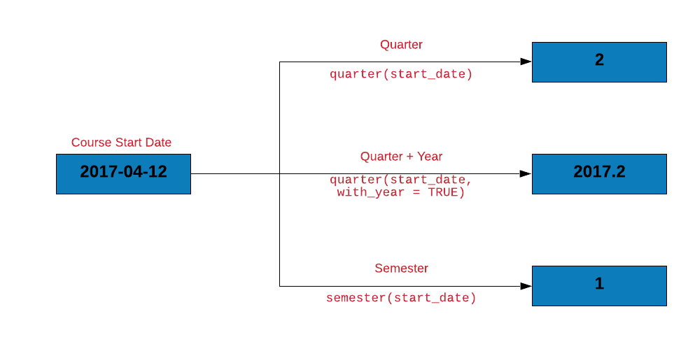
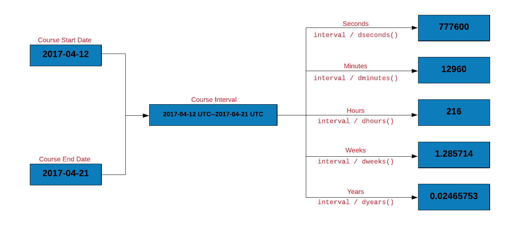

Chapter 9 Date & Time
9.1 Introduction
Let us begin by looking at the current date and time.
9.1.1 Date
Sys.Date() and today() will return the current date.
Sys.Date()## [1] "2021-07-14"lubridate::today()## [1] "2021-07-14"9.1.2 Time
Sys.time() and now() return the date, time and the timezone. In now(), we can specify the timezone using the tzone argument.
Sys.time()## [1] "2021-07-14 21:42:14 IST"lubridate::now()## [1] "2021-07-14 21:42:14 IST"lubridate::now(tzone = "UTC")## [1] "2021-07-14 16:12:14 UTC"9.1.3 AM or PM?
am() and pm() allow us to check whether date/time occur in the am or pm? They return a logical value i.e. TRUE or FALSE
lubridate::am(now())## [1] FALSElubridate::pm(now())## [1] TRUE9.1.4 Leap Year
We can also check if the current year is a leap year using leap_year().
lubridate::leap_year(Sys.Date())## [1] FALSE9.1.5 Summary
| Function | Description |
|---|---|
Sys.Date()
|
Current Date |
lubridate::today()
|
Current Date |
Sys.time()
|
Current Time |
lubridate::now()
|
Current Time |
lubridate::am()
|
Whether time occurs in am? |
lubridate::pm()
|
Whether time occurs in pm? |
lubridate::leap_year()
|
Check if the year is a leap year? |
9.1.6 Your Turn
- get current date
- get current time
- check whether the time occurs in am or pm?
- check whether the following years were leap years
- 2018
- 2016
9.2 Case Study
Throughout the tutorial, we will work on a case study related to transactions of a imaginary company. The data set includes information about invoice and payment dates.
9.2.1 Data
transact <- readr::read_csv('https://raw.githubusercontent.com/rsquaredacademy/datasets/master/transact.csv')## # A tibble: 2,466 x 3
## Invoice Due Payment
## <date> <date> <date>
## 1 2013-01-02 2013-02-01 2013-01-15
## 2 2013-01-26 2013-02-25 2013-03-03
## 3 2013-07-03 2013-08-02 2013-07-08
## 4 2013-02-10 2013-03-12 2013-03-17
## 5 2012-10-25 2012-11-24 2012-11-28
## 6 2012-01-27 2012-02-26 2012-02-22
## 7 2013-08-13 2013-09-12 2013-09-09
## 8 2012-12-16 2013-01-15 2013-01-12
## 9 2012-05-14 2012-06-13 2012-07-01
## 10 2013-07-01 2013-07-31 2013-07-26
## # ... with 2,456 more rows9.2.2 Data Dictionary
The data set has 3 columns. All the dates are in the format (yyyy-mm-dd).
| Column | Description |
|---|---|
| Invoice | Invoice Date |
| Due | Due Date |
| Payment | Payment Date |
In the case study, we will try to answer a few questions we have about the transact data.
- extract date, month and year from Due
- compute the number of days to settle invoice
- compute days over due
- check if due year is a leap year
- check when due day in february is 29, whether it is a leap year
- how many invoices were settled within due date
- how many invoices are due in each quarter
9.3 Date & Time Classes
9.3.1 Introduction
In this section, we will look at two things. First, how to create date/time data in R, and second, how to convert other data types to date/time. Let us begin by creating the latest R release date manually.
release_date <- 2019-12-12
release_date## [1] 1995Okay! Why do we see 1995 when we call the date? What is happening here? Let us
quickly check the data type of release_date.
class(release_date)## [1] "numeric"The data type is numeric i.e. R has subtracted 12 twice from 2019 to
return 1995. Clearly, the above method is not the right way to store
date/time. Let us see if we can get some hints from the builtin R functions we
used in the previous section. If you observe the output, all of them returned
date/time wrapped in quotes. Hmmm… let us wrap our date in quotes and see what
happens.
release_date <- "2019-12-12"
release_date## [1] "2019-12-12"Alright, now R does not do any arithmetic and returns the date as we specified. Great! Is this the right format to store date/time? No. Why? What is the problem if date/time is saved as character/string? The problem is the nature or type of operations done on date or time is different when compared to string/character, number or logical values.
- how do we add/subtract dates?
- how do we extract components such as year, month, day etc.
To answer the above questions, we will first check the data type of Sys.Date()
and now().
class(Sys.Date())## [1] "Date"class(lubridate::now())## [1] "POSIXct" "POSIXt"class(release_date)## [1] "character"As you can see from the above output, there are 3 different classes for storing date/time in R
DatePOSIXctPOSIXlt
Let us explore each of the above classes one by one.
9.3.2 Date
9.3.2.1 Introduction
The Date class represents calendar dates. Let us go back to Sys.Date(). If
you check the class of Sys.Date(), it is Date. Internally, this date is a
number i.e. an integer. The unclass() function will show dates are stored
internally.
unclass(Sys.Date())## [1] 18822What does this integer represent? Why has R stored the date as an integer?
Before we answer this question, we need to know something else. In R, dates are
represented as the number of days since 1970-01-01. All the dates in R are
internally stored in this way. Before we explore this concept further, let us
learn to create Date objects in R. We will continue to use the latest R
release date, 2019-12-12.
Until now, we have stored the above date as character/string but now we will use
as.Date() to save it as a Date object. as.Date() is the easiest and
simplest way to create dates in R.
release_date <- as.Date("2019-12-12")
release_date## [1] "2019-12-12"The as_date() function from the lubridate package is similar to as.Date().
release_date <- lubridate::as_date("2019-12-12")
release_date## [1] "2019-12-12"If you look at the difference between release_date and 1970-01-01, it will
be the same as unclass(release_date).
release_date - as.Date("1970-01-01")## Time difference of 18242 daysunclass(release_date)## [1] 18242Let us come back to 1970-01-01 i.e. the origin for dates in R.
lubridate::origin## [1] "1970-01-01 UTC"From the previous examples, we know that dates are internally stored as number
of days since 1970-01-01. How about dates older than the origin? How are they
stored? Let us look at that briefly.
unclass(as.Date("1963-08-28"))## [1] -2318Dates older than the origin are stored as negative integers. For those who are
not aware, Martin Luther King, Jr. delivered his famous I Have a Dream
speech on 1963-08-28. Let us move on and learn how to convert numbers into
dates.
9.3.2.2 Convert Numeric
The as.Date() function can be used to convert any of the following to a Date
object
- character/string
- number
- factor (categorical/qualitative)
We have explored how to convert strings to date. How about converting numbers to date? Sure, we can create date from numbers by specifying the origin and number of days since it.
as.Date(18242, origin = "1970-01-01")## [1] "2019-12-12"The origin can be changed to another date (while changing the number as well.)
as.Date(7285, origin = "2000-01-01")## [1] "2019-12-12"9.3.3 ISO 8601

If you have carefully observed, the format in which we have been specifying the
dates as well as of those returned by functions such as Sys.Date() or
Sys.time() is the same i.e. YYYY-MM-DD. It includes
- the year including the century
- the month
- the date
The month and date separated by -. This default format used in R is the ISO
8601 standard for date/time. ISO 8601 is the internationally accepted way to
represent dates and times and uses the 24 hour clock system. Let us create the
release date using another function ISOdate().
ISOdate(year = 2019,
month = 12,
day = 12,
hour = 8,
min = 5,
sec = 3,
tz = "UTC")## [1] "2019-12-12 08:05:03 UTC"We will look at all the different weird ways in which date/time are specified in
the real world in the Date & Time Formats section. For the time being, let us
continue exploring date/time classes in R. The next class we are going to look
at is POSIXct/POSIXlt.
9.3.4 POSIX
You might be wondering what is this POSIX thing? POSIX stands for Portable
Operating System Interface. It is a family of standards specified f
or maintaining compatibility between different operating systems. Before we
learn to create POSIX objects, let us look at now() from lubridate.
class(lubridate::now())## [1] "POSIXct" "POSIXt"now() returns current date/time as a POSIXct object. Let us look at its
internal representation using unclass()
unclass(lubridate::now())## [1] 1626279145
## attr(,"tzone")
## [1] ""The output you see is the number of seconds since January 1, 1970.
9.3.4.1 POSIXct
POSIXct represents the number of seconds since the beginning of 1970 (UTC) and
ct stands for calendar time. To store date/time as POSIXct objects, use
as.POSIXct(). Let us now store the latest R release date as POSIXct as shown
below
release_date <- as.POSIXct("2019-12-12 08:05:03")
class(release_date)## [1] "POSIXct" "POSIXt"unclass(release_date) ## [1] 1576118103
## attr(,"tzone")
## [1] ""9.3.4.2 POSIXlt
POSIXlt represents the following information in a list
- seconds
- minutes
- hour
- day of the month
- month
- year
- day of week
- day of year
- daylight saving time flag
- time zone
- offset in seconds from GMT
The lt in POSIXlt stands for local time. Use as.POSIXlt() to store
date/time as POSIXlt objects. Let us store the release date as a POSIXlt
object as shown below
release_date <- as.POSIXlt("2019-12-12 08:05:03")
release_date## [1] "2019-12-12 08:05:03 IST"As we said earlier, POSIXlt stores date/time components in a list and these
can be extracted. Let us look at the date/time components returned by POSIXlt
using unclass().
release_date <- as.POSIXlt("2019-12-12 08:05:03")
unclass(release_date)## $sec
## [1] 3
##
## $min
## [1] 5
##
## $hour
## [1] 8
##
## $mday
## [1] 12
##
## $mon
## [1] 11
##
## $year
## [1] 119
##
## $wday
## [1] 4
##
## $yday
## [1] 345
##
## $isdst
## [1] 0
##
## $zone
## [1] "IST"
##
## $gmtoff
## [1] NAUse unlist() if you want the components returned as a vector.
release_date <- as.POSIXlt("2019-12-12 08:05:03")
unlist(release_date)## sec min hour mday mon year wday yday isdst zone gmtoff
## "3" "5" "8" "12" "11" "119" "4" "345" "0" "IST" NATo extract specific components, use $.
release_date <- as.POSIXlt("2019-12-12 08:05:03")
release_date$hour## [1] 8release_date$mon## [1] 11release_date$zone## [1] "IST"Now, let us look at the components returned by POSIXlt. Some of them are
intuitive
| Component | Description |
|---|---|
sec
|
Second |
min
|
Minute |
hour
|
Hour of the day |
mon
|
Month of the year (0-11 |
zone
|
Timezone |
wday
|
Day of week |
mday
|
Day of month |
year
|
Years since 1900 |
yday
|
Day of year |
isdst
|
Daylight saving flag |
gmtoff
|
Offset is seconds from GMT |
Great! We will end this section with a few tips/suggestions on when to use
Date or POSIXct/POSIXlt.
- use
Datewhen there is no time component - use
POSIXwhen dealing with time and timezones - use
POSIXltwhen you want to access/extract the different components
9.3.5 Your Turn
R 1.0.0 was released on 2000-02-29 08:55:23 UTC. Save it as
Dateusing characterDateusing origin and numberPOSIXctPOSIXltand extract- month day
- day of year
- month
- zone
- ISODate
9.4 Date Arithmetic
9.4.1 Introduction
Time to do some arithmetic with the dates. Let us calculate the length of a course you have enrolled for (Become a Rock Star Data Scientist in 10 Days) by subtracting the course start date from the course end date.
course_start <- as_date('2017-04-12')
course_end <- as_date('2017-04-21')
course_duration <- course_end - course_start
course_duration
## Time difference of 9 days9.4.2 Shift Date
Time to shift the course dates. We can shift a date by days, weeks or months. Let us shift the course start date by:
- 2 days
- 3 weeks
- 1 year

course_start + days(2)
## [1] "2017-04-14"
course_start + weeks(3)
## [1] "2017-05-03"
course_start + years(1)
## [1] "2018-04-12"9.4.3 Case Study
9.4.3.1 Compute days to settle invoice
Let us estimate the number of days to settle the invoice by subtracting the date of invoice from the date of payment.
transact %>%
mutate(
days_to_pay = Payment - Invoice
)## # A tibble: 2,466 x 4
## Invoice Due Payment days_to_pay
## <date> <date> <date> <drtn>
## 1 2013-01-02 2013-02-01 2013-01-15 13 days
## 2 2013-01-26 2013-02-25 2013-03-03 36 days
## 3 2013-07-03 2013-08-02 2013-07-08 5 days
## 4 2013-02-10 2013-03-12 2013-03-17 35 days
## 5 2012-10-25 2012-11-24 2012-11-28 34 days
## 6 2012-01-27 2012-02-26 2012-02-22 26 days
## 7 2013-08-13 2013-09-12 2013-09-09 27 days
## 8 2012-12-16 2013-01-15 2013-01-12 27 days
## 9 2012-05-14 2012-06-13 2012-07-01 48 days
## 10 2013-07-01 2013-07-31 2013-07-26 25 days
## # ... with 2,456 more rows9.4.3.2 Compute days over due
How many of the invoices were settled post the due date? We can find this by:
- subtracting the due date from the payment date
- counting the number of rows where delay < 0
transact %>%
mutate(
delay = Due - Payment
) %>%
filter(delay < 0) %>%
mutate(
delay = delay * -1
) %>%
count(delay)## # A tibble: 36 x 2
## delay n
## <drtn> <int>
## 1 1 days 61
## 2 2 days 65
## 3 3 days 51
## 4 4 days 62
## 5 5 days 69
## 6 6 days 56
## 7 7 days 55
## 8 8 days 49
## 9 9 days 38
## 10 10 days 33
## # ... with 26 more rows9.4.4 Your Turn
- compute the length of a vacation which begins on
2020-04-19and ends on2020-04-25 - recompute the length of the vacation after shifting the vacation start and end date by
10days and2weeks - compute the days to settle invoice and days overdue from the
receivables.csvdata set - compute the length of employment (only for those employees who have been terminated) from the
hr-data.csvdata set (use date of hire and termination)
9.5 Time Zones
9.5.1 Introduction

In the previous section, POSIXlt stored date/time components as a list. Among
the different components it returned were
gmtoffzone
gmtoff is offset in seconds from GMT i.e. difference in hours and minutes from
UTC. Wait.. What do UTC and GMT stand for?
- Coordinated Universal Time (UTC)
- Greenwich Meridian Time (GMT)
Since we are talking about UTC, GMT etc., let us spend a little time on understanding the basics of time zones and daylight savings.
9.5.2 Time Zones
Timezones exist because different parts of the Earth receive sun light at different times. If there was a single timezone, noon or morning would mean different things in different parts of the world. The timezones are based on Earth’s rotation. The Earth moves ~15 degrees every 60 minutes i.e. 360 degrees in 24 hours. The planet is divided into 24 timezones each 15 degrees of longitude width.
Now, you have heard of Greenwich Meridian Time (GMT) right? We just saw GMT off
set in POSIXlt and you would have come across it in other time formats as
well. For example, India timezone is given as GMT +5:30. Let us explore GMT in a
little more detail. Greenwich is a suburb of London and the time at Greenwich
is Greenwich Mean Time. As you move West from Greenwich, every 15
degree section is one hour earlier than GMT and every 15 degree section to the
East is an hour later.
Alright! What is UTC then? Coordinated Universal Time (UTC) , on the other hand, is the time standard commonly used across the world. Even though they share the same current time, GMT is a timezone while UTC is a time standard.
So how do we check the timezone in R? When you run Sys.timezone(), you should
be able to see the timezone you are in.
Sys.timezone()## [1] "Asia/Calcutta"If you do not see the timezone, use Sys.getenv() to get the value of the
TZ environment variable.
Sys.getenv("TZ")## [1] ""If nothing is returned, it means we have to set the timezone. Use Sys.setenv()
to set the timezone as shown below. The author resides in India and hence the
timezone is set to Asia/Calcutta. You need to set the timezone in which you
reside or work.
Sys.setenv(TZ = "Asia/Calcutta")Another way to get the timezone is through tz() from the lubridate package.
lubridate::tz(Sys.time())## [1] ""If you want to view the time in a different timezone, use with_tz(). Let us
look at the current time in UTC instead of Indian Standard Time.
lubridate::with_tz(Sys.time(), "UTC")## [1] "2021-07-14 16:12:34 UTC"9.5.3 Daylight Savings

Daylight savings also known as
- daylight saving time
- daylight savings time
- daylight time
- summer time
is the practice of advancing clocks during summer months so that darkness falls later each day according to the clock. In other words
- advance clock by one hour in spring (spring forward)
- retard clocks by one hour in autumn (fall back)
In R, the dst() function is an indicator for daylight savings. It returns
TRUE if daylight saving is in force, FALSE if not and NA if unknown.
dst(Sys.Date()) ## [1] FALSE9.5.4 Your Turn
- check the timezone you live in
- check if daylight savings in on
- check the current time in UTC or a different time zone
9.6 Date & Time Formats
9.6.1 Introduction
After the timezones and daylight savings detour, let us get back on path and explore another important aspect, date & time formats. Although it is a good practice to adher to ISO 8601 format, not all date/time data will comply with it. In real world, date/time data may come in all types of weird formats. Below is a sample
| Format |
|---|
| December 12, 2019 |
| 12th Dec, 2019 |
| Dec 12th, 19 |
| 12-Dec-19 |
| 2019 December |
| 12.12.19 |
When the data is not in the default ISO 8601 format, we need to explicitly specify the format in R. We do this using conversion specifications. A conversion specification is introduced by %, usually followed by a single letter or O or E and then a single letter.
9.6.2 Conversion Specifications
| Specification | Description | Example |
|---|---|---|
%d
|
Day of the month (decimal number) | 12 |
%m
|
Month (decimal number) | 12 |
%b
|
Month (abbreviated) | Dec |
%B
|
Month (full name) | December |
%y
|
Year (2 digit) | 19 |
%Y
|
Year (4 digit) | 2019 |
| %H | Hour | 8 |
| %M | Minute | 5 |
| %S | Second | 3 |
Time to work through a few examples. Let us say you are dealing with dates in
the format 19/12/12. In this format, the year comes first followed by month
and the date; each separated by a backslash (/). The year consists of only 2
digits i.e. it does not include the century. Let us now map each component of
the date to the format table shown at the beginning.
| Date | Specification |
|---|---|
| 19 |
%y
|
| 12 |
%m
|
| 12 |
%d
|
Using the format argument, we will specify the date format as a character vector i.e. enclosed in quotes.
as.Date("19/12/12", format = "%y/%m/%d")## [1] "2019-12-12"Another way in which the release data can be written is 2019-Dec-12. We still
have the year followed by the month and the date but there are a few changes
here:
- the components are separated by a
-instead of/ - year has 4 digits i.e. includes the century
- the month is specified using abbreviation instead of digits
Let us map the components to the format table:
| Date | Specification |
|---|---|
| 2019 |
%Y
|
| Dec |
%b
|
| 12 |
%d
|
Let us specify the format for the date using the above mapping.
as.Date("2019-Dec-12", format = "%Y-%b-%d")## [1] "2019-12-12"In both the above examples, we have not dealt with time components. Let us
include the time of the latest R release in the next one i.e.
19/12/12 08:05:03.
| Date | Specification |
|---|---|
| 19 |
%y
|
| 12 |
%m
|
| 12 |
%d
|
| 08 |
%H
|
| 05 |
%M
|
| 03 |
%S
|
Since we are dealing with time, we will use as.POSIXct() instead of
as.Date().
as.POSIXct("19/12/12 08:05:03", tz = "UTC", format = "%y/%m/%d %H:%M:%S")## [1] "2019-12-12 08:05:03 UTC"In the below table, we look at some of the most widely used conversion
specifications. You can learn more about these specifications by running
?strptime or help(strptime).
| Specification | Description |
|---|---|
%a
|
Abbreviated weekday |
%A
|
Full weekday |
%C
|
Century (00-99) |
%D
|
Same as %m/%d/%y
|
%e
|
Day of month [1 - 31] |
%F
|
Same as %Y-%m-%d
|
%h
|
Same as %b
|
%I
|
Hours as decimal [01 - 12] |
%j
|
Day of year [001 - 366] |
%R
|
Same as %H:%M
|
%t
|
Tab |
%T
|
Same as %H:%M:%S
|
%u
|
Weekday 1 - 7 |
%U
|
Week of year [00 - 53] |
%V
|
Week of year [01 - 53] |
%w
|
Weekday 0 - 6 |
%W
|
Week of year [00 - 53] |
We have included a lot of practice questions for you to explore the different date/time formats. The solutions are available in the Learning Management system as well as in our GitHub repo. Try them and let us know if you have any doubts.
9.6.3 Guess Format
guess_formats() from lubridate is a very useful function. It will guess the
date/time format if you specify the order in which year, month, date, hour,
minute and second appear.
release_date_formats <- c("December 12th 2019",
"Dec 12th 19",
"dec 12 2019")
guess_formats(release_date_formats,
orders = "mdy",
print_matches = TRUE)## Omdy mdy
## [1,] "December 12th 2019" "%Om %dth %Y" "%B %dth %Y"
## [2,] "Dec 12th 19" "%Om %dth %y" "%b %dth %y"
## [3,] "dec 12 2019" "%Om %d %Y" "%b %d %Y"## Omdy Omdy Omdy mdy mdy
## "%Om %dth %Y" "%Om %dth %y" "%Om %d %Y" "%B %dth %Y" "%b %dth %y"
## mdy
## "%b %d %Y"9.6.4 Your Turn
Below, we have specified July 5th, 2019 in different ways. Create the date using as.Date() while specifying the correct format for each of them.
July-05-19JUL-05-1905.07.195-July 2019July 5th, 2019July 05, 20192019-July- 0505/07/201907/05/20197/5/201907/5/192019-07-05
9.7 Parse Date & Time
While creating date-time objects, we specified different formats using the conversion specification but most often you will not create date/time and instead deal with data thay comes your way from a system or colleague/collaborator. In such cases, we need to be able to parse date/time from the data provided to us. In this section, we will focus on parsing date/time from character data. Both base R and the lubridate package offer functions to parse date and time and we will explore a few of them in this section. We will initially use functions from base R and later on explore those from lubridate which will give us an opportunity to compare and contrast. It will also allow us to choose the functions based on the data we are dealing with.
strptime() will convert character data to POSIXlt. You will use this when
converting from character data to date/time. On the other hand, if you want to
convert date/time to character data, use any of the following:
strftime()format()as.character()
The above functions will convert POSIXct/POSIXlt to character. Let us start
with a simple example. The data we have been supplied has date/time as
character data and in the format YYYYMMDD i.e. nothing separates the year,
month and date from each other. We will use strptime() to convert this to an
object of class POSIXlt.
rel_date <- strptime("20191212", format = "%Y%m%d")
class(rel_date)## [1] "POSIXlt" "POSIXt"If you have a basic knowledge of conversion specifications, you can use
strptime() to convert character data to POSIXlt. Let us quickly explore the
functions to convert date/time to character data before moving on to the
functions from lubridate.
rel_date_strf <- strftime(rel_date)
class(rel_date_strf)## [1] "character"rel_date_format <- format(rel_date)
class(rel_date_format)## [1] "character"rel_date_char <- as.character(rel_date)
class(rel_date_char)## [1] "character"As you can see, all the 3 functions converted date/time to character. Time to move on and explore the lubridate package. We will start with an example in which the release date is formatted in 3 different ways but they have one thing in common i.e. the order in which the components appear. In all the 3 formats, the year is followed by the month and then the date.
To parse the release date, we will use parse_date_time() from lubridate which
parses the input into POSIXct objects.
release_date <- c("19-12-12", "20191212", "19-12 12")
parse_date_time(release_date, "ymd")## [1] "2019-12-12 UTC" "2019-12-12 UTC" "2019-12-12 UTC"parse_date_time(release_date, "y m d")## [1] "2019-12-12 UTC" "2019-12-12 UTC" "2019-12-12 UTC"parse_date_time(release_date, "%y%m%d")## [1] "2019-12-12 UTC" "2019-12-12 UTC" "2019-12-12 UTC"Try to use strptime() in the above example and see what happens. Now, let us
look at another data set.
release_date <- c("19-07-05", "2019-07-05", "05-07-2019", "07-05-2019")What happens in the below case? The same date appears in multiple formats. How
do we parse them? parse_date_time() allows us to specify mutiple date-time
formats. Let us first map the dates to their formats.
| Date | Specification |
|---|---|
| 19-07-05 |
ymd
|
| 2019-07-05 |
ymd
|
| 05-07-2019 |
dmy
|
| 07-05-2019 |
mdy
|
The above specifications can be supplied as a character vector.
parse_date_time(release_date, c("ymd", "ymd", "dmy", "mdy"))## [1] "2019-07-05 UTC" "2019-07-05 UTC" "2019-07-05 UTC" "2019-05-07 UTC"Great! We have used both strptime() and parse_date_time() now. Can you tell
what differentiates parse_date_time() when compared to strptime()? We
summarize it in the points below:
- no need to include
%prefix or separator - specify several date/time formats
There are other helper functions that can be used to
- parse dates with year, month, day components
- parse dates with year, month, day, hour, minute, seconds components
- parse period with hour, minute, second components
and are explored in the below examples.
# year/month/date
ymd("2019-12-12")## [1] "2019-12-12"# year/month/date
ymd("19/12/12")## [1] "2019-12-12"# date/month/year
dmy(121219)## [1] "2019-12-12"# year/month/date/hour/minute/second
ymd_hms(191212080503)## [1] "2019-12-12 08:05:03 UTC"# hour/minute/second
hms("8, 5, 3")## [1] "8H 5M 3S"# hour/minute/second
hms("08:05:03")## [1] "8H 5M 3S"# minute/second
ms("5,3")## [1] "5M 3S"# hour/minute
hm("8, 5")## [1] "8H 5M 0S"Note, in a couple of cases where the components are not separated by /, - or
space, we have not enclosed the values in quotes.
9.7.1 Your Turn
Below, we have specified July 5th, 2019 in different ways. Parse the dates using strptime() or parse_date_time() or any other helper function.
July-05-19JUL-05-1905.07.195-July 2019July 5th, 2019July 05, 20192019-July- 0505/07/201907/05/20197/5/201907/5/192019-07-05
9.8 Date & Time Components
In the second section, we discussed the downside of saving date/time as character/string in R. One of the points we discussed was that we can’t extract components such as year, month, day etc. In this section, we will learn to extract date/time components such as
- year
- month
- date
- week
- day
- quarter
- semester
- hour
- minute
- second
- timezone

The below table outlines the functions we will explore in the first part of this section.
| Function | Description |
|---|---|
year()
|
Get year |
month()
|
Get month (number) |
month(label = TRUE)
|
Get month (abbreviated name) |
month(abbr = FALSE)
|
Get month (full name) |
months()
|
Get month |
week()
|
Get week |
9.8.1 Year
release_date <- ymd_hms("2019-12-12 08:05:03")
year(release_date) ## [1] 20199.8.2 Month
month() will return the month as a number i.e. 07 for July.
month(release_date)## [1] 12If you want the name of the month instead, use the label argument and set it
to TRUE. Now it returns Jul instead of 07.
month(release_date, label = TRUE)## [1] Dec
## 12 Levels: Jan < Feb < Mar < Apr < May < Jun < Jul < Aug < Sep < ... < DecBut this is the abbreviated name and not the full name. How do we get the full
name of the month? Set the abbr argument to FALSE.
month(release_date, label = TRUE, abbr = FALSE)## [1] December
## 12 Levels: January < February < March < April < May < June < ... < DecemberAh! now we can see the full name of the month. months() from base R will
return the full name of the month by default. If you want the abbreviated name,
use the abbreviate argument and set it to TRUE.
months(release_date)## [1] "December"9.8.3 Week
week() returns the number of complete 7 day periods between the date and 1st
January plus one.
week(release_date)## [1] 509.8.4 Day
Use day() to extract the date component. There are other variations such as
| Function | Description |
|---|---|
day
|
Get day |
mday()
|
Day of the month |
wday()
|
Day of the week |
qday()
|
Day of quarter |
yday()
|
Day of year |
weekdays()
|
Day of week |
days_in_month()
|
Days in the month |
day(release_date)## [1] 12mday(release_date) ## [1] 12qday(release_date) ## [1] 73yday(release_date) ## [1] 346wday can return
- a number
- abbreviation of the weekday
- full name of the weekday
wday(release_date) ## [1] 5wday(release_date, label = TRUE)## [1] Thu
## Levels: Sun < Mon < Tue < Wed < Thu < Fri < Satwday(release_date, label = TRUE, abbr = FALSE) ## [1] Thursday
## 7 Levels: Sunday < Monday < Tuesday < Wednesday < Thursday < ... < Saturdayweekdays() from base R also returns the day of the week (the name and not
the number). If you want the abbreviated name, use the abbreviate argument.
weekdays(release_date)## [1] "Thursday"weekdays(release_date, abbreviate = TRUE)## [1] "Thu"9.8.5 Days in Month
If you want to know the number of days in the month, use days_in_month().
In our example, the month is December and it has 31 days.
days_in_month(release_date)## Dec
## 319.8.6 Hour, Minute & Seconds
| Function | Description |
|---|---|
hour()
|
Get hour |
minute()
|
Get minute |
second()
|
Get second |
seconds()
|
Number of seconds since 1970-01-01
|
So far we have been looking at date components. Now, let us look at time components.
hour(release_date)## [1] 8minute(release_date)## [1] 5second(release_date)## [1] 3seconds() returns the number of seconds since 1970-01-01.
seconds(release_date)## [1] "1576137903S"9.8.7 Quarter & Semester

quarter() will return the quarter from the date. December is in the 4th
quarter and hence it returns 4.
quarter(release_date)## [1] 4If you want the year along with the quarter, set the with_year argument to
TRUE.
quarter(release_date, with_year = TRUE)## [1] 2019.4In India, the fiscal starts in April and December falls in the 3rd quarter. How
can we accommodate this change? The fiscal_start argument allows us to set the
month in which the fiscal begins. We will set it to 4 for April. Now it returns
3 instead of 4.
quarter(release_date, fiscal_start = 4) ## [1] 3quarters() from base R also returns the quarter.
quarters(release_date)## [1] "Q4"| Function | Description |
|---|---|
quarter()
|
Get quarter |
quarter(with_year = TRUE)
|
Quarter with year |
quarter(fiscal_start = 4)
|
Fiscal starts in April |
quarters()
|
Get quarter |
semester()
|
Get semester |
9.8.8 Case Study
9.8.8.1 Extract Date, Month & Year from Due Date
Let us now extract the date, month and year from the Due column.
transact %>%
mutate(
due_day = day(Due),
due_month = month(Due),
due_year = year(Due)
)## # A tibble: 2,466 x 6
## Invoice Due Payment due_day due_month due_year
## <date> <date> <date> <int> <dbl> <dbl>
## 1 2013-01-02 2013-02-01 2013-01-15 1 2 2013
## 2 2013-01-26 2013-02-25 2013-03-03 25 2 2013
## 3 2013-07-03 2013-08-02 2013-07-08 2 8 2013
## 4 2013-02-10 2013-03-12 2013-03-17 12 3 2013
## 5 2012-10-25 2012-11-24 2012-11-28 24 11 2012
## 6 2012-01-27 2012-02-26 2012-02-22 26 2 2012
## 7 2013-08-13 2013-09-12 2013-09-09 12 9 2013
## 8 2012-12-16 2013-01-15 2013-01-12 15 1 2013
## 9 2012-05-14 2012-06-13 2012-07-01 13 6 2012
## 10 2013-07-01 2013-07-31 2013-07-26 31 7 2013
## # ... with 2,456 more rows9.8.8.2 Data Sanitization
Let us do some data sanitization. If the due day happens to be February 29, let us ensure that the due year is a leap year. Below are the steps to check if the due year is a leap year:
- we will extract the following from the due date:
- day
- month
- year
- we will then create a new column
is_leapwhich will have be set toTRUEif the year is a leap year else it will be set toFALSE - filter all the payments due on 29th Feb
- select the following columns:
Dueis_leap
transact %>%
mutate(
due_day = day(Due),
due_month = month(Due),
due_year = year(Due),
is_leap = leap_year(due_year)
) %>%
filter(due_month == 2 & due_day == 29) %>%
select(Due, is_leap) ## # A tibble: 4 x 2
## Due is_leap
## <date> <lgl>
## 1 2012-02-29 TRUE
## 2 2012-02-29 TRUE
## 3 2012-02-29 TRUE
## 4 2012-02-29 TRUE9.8.8.3 Invoices Distribution by Quarter
Let us count the invoices due for each quarter.
transact %>%
mutate(
quarter_due = quarter(Due)
) %>%
count(quarter_due)## # A tibble: 4 x 2
## quarter_due n
## <int> <int>
## 1 1 521
## 2 2 661
## 3 3 618
## 4 4 6669.8.9 Your Turn
Get the R release dates using r_versions() from the rversions package and
tabulate the following
- year
- month with label
- weekday with label
- hour
- and quarter
9.9 Create, Update & Verify
In the second section, we learnt to create date-time objects using as.Date(),
as.POSIXct() etc. In this section, we will explore a few other functions that
will allow us to do the same
make_date()make_datetime()
9.9.1 Create
To create date without time components, use make_date() and specify the
following:
- year
- month
- date
We need to specify all the components in numbers i.e. we cannot use Jul or
July for the month. It has to be 7.
make_date(year = 2019,
month = 12,
day = 12)## [1] "2019-12-12"When you need to include time components, use make_datetime().
make_datetime(year = 2019,
month = 12,
day = 12,
hour = 08,
min = 05,
sec = 03,
tz = "UTC")## [1] "2019-12-12 08:05:03 UTC"9.9.2 Update
Let us look at another scenario. You have a date-time object and want to change one of its components i.e. any of the following
- year
- month
- date
Instead of creating another date-time object, you can change any of the
components using update(). In the below example, we will start with the date
of release of R version 3.6.1 and using update(), we will change it to
2019-12-12.
prev_release <- ymd("2019-07-05")
prev_release %>%
update(year = 2019,
month = 12,
mday = 12)## [1] "2019-12-12"9.9.3 Date Sequence
So far we have created a single date-time instance. How about creating a
sequence of dates? We can do that using seq.Date(). We need to specify the
from date as the bare minimum input. If the end date is not specified, it will
create the sequence uptil the current date.
The interval of the sequence can be specified in any of the following units:
- day
- week
- month
- quarter
- year
We can add the following to the interval units
- integer
+/-(increment or decrement)
Using the integer, we can specify multiples of the units mentioned and using the sign, we can specify whether to increment or decrement.
The below table displays the main arguments used in seq.Date():
| Function | Description |
|---|---|
from
|
Starting date of the sequence |
by
|
End date of the sequence |
to
|
Date increment of the sequence |
length.out
|
Length of the sequence |
along.with
|
Use length of this value as length of sequence |
In the first example, we will create a sequence of dates from 2010-01-01 to
2019-12-31. The unit of increment should be a year i.e. the difference
between the dates in the sequence should be 1 year, specified using the by
argument.
seq.Date(from = as.Date("2010-01-01"), to = as.Date("2019-12-31"), by = "year")## [1] "2010-01-01" "2011-01-01" "2012-01-01" "2013-01-01" "2014-01-01"
## [6] "2015-01-01" "2016-01-01" "2017-01-01" "2018-01-01" "2019-01-01"In the next example, we change the unit of increment to a quarter i.e. the difference between the dates in the sequence should be a quarter or 3 months.
seq.Date(from = as.Date("2009-12-12"), to = as.Date("2019-12-12"), by = "quarter")## [1] "2009-12-12" "2010-03-12" "2010-06-12" "2010-09-12" "2010-12-12"
## [6] "2011-03-12" "2011-06-12" "2011-09-12" "2011-12-12" "2012-03-12"
## [11] "2012-06-12" "2012-09-12" "2012-12-12" "2013-03-12" "2013-06-12"
## [16] "2013-09-12" "2013-12-12" "2014-03-12" "2014-06-12" "2014-09-12"
## [21] "2014-12-12" "2015-03-12" "2015-06-12" "2015-09-12" "2015-12-12"
## [26] "2016-03-12" "2016-06-12" "2016-09-12" "2016-12-12" "2017-03-12"
## [31] "2017-06-12" "2017-09-12" "2017-12-12" "2018-03-12" "2018-06-12"
## [36] "2018-09-12" "2018-12-12" "2019-03-12" "2019-06-12" "2019-09-12"
## [41] "2019-12-12"We will now create a sequence of dates but instead of specifying the unit of
increment, we specify the number of dates in the sequence i.e. the length of the
sequence. We do this using the length.out argument which specifies the desired
length of the sequence. We want the sequence to have 10 dates including the
start and end date, and hence we supply the value 10 for the length.out
argument.
seq.Date(from = as.Date("2010-01-01"), to = as.Date("2019-12-31"), length.out = 10)## [1] "2010-01-01" "2011-02-10" "2012-03-22" "2013-05-02" "2014-06-11"
## [6] "2015-07-22" "2016-08-31" "2017-10-10" "2018-11-20" "2019-12-31"In all of the previous examples, we have specified both the start and the end
date. Let us look at a few examples where we create a sequence of dates where
we only specify the start date. In the below example, we want to create a
sequence of dates starting from 2010-01-01. The unit of increment should be 1
year i.e. the difference between the dates in the sequence should be 1 year and
the length of the sequence should be 10 i.e. the number of dates including the
start date should be 10.
seq.Date(from = as.Date("2010-01-01"), by = "year", length.out = 10)## [1] "2010-01-01" "2011-01-01" "2012-01-01" "2013-01-01" "2014-01-01"
## [6] "2015-01-01" "2016-01-01" "2017-01-01" "2018-01-01" "2019-01-01"The unit of increment can include multiples and +/- sign i.e. it can be an
unit of increment or decrement. In the next example, we can increment the dates
in the sequence by 2 i.e. the difference between the dates should be 2
instead of 1. This is achieved by specifying the unit of increment (multiple)
first followed by a space and then the unit. In our example, it is 2 year. As
you can see, the sequence now goes all the way till 2028 and the gap between
the dates is 2 years.
seq.Date(from = as.Date("2010-01-01"), by = "2 year", length.out = 10)## [1] "2010-01-01" "2012-01-01" "2014-01-01" "2016-01-01" "2018-01-01"
## [6] "2020-01-01" "2022-01-01" "2024-01-01" "2026-01-01" "2028-01-01"Let us say instead of increment we want to decrement the dates i.e. the sequence
of dates will go backwards as shown in the next example. We achieve this by
using the - sign along with the unit of decrement. The sequence of dates in
next example starts from 2010 and goes back upto 1992 and the difference
between the dates in 2 years.
seq.Date(from = as.Date("2010-01-01"), by = "-2 year", length.out = 10)## [1] "2010-01-01" "2008-01-01" "2006-01-01" "2004-01-01" "2002-01-01"
## [6] "2000-01-01" "1998-01-01" "1996-01-01" "1994-01-01" "1992-01-01"In the last example, we will explore the along.with argument. Here we have
supplied a vector which is a sequence of numbers from 1 to 10. The length of
this vector is 10 and the same length is used as the length of the sequence i.e.
the length of value supplied to along.with is also the length of the sequence.
seq.Date(from = as.Date("2010-01-01"), by = "-2 year", along.with = 1:10)## [1] "2010-01-01" "2008-01-01" "2006-01-01" "2004-01-01" "2002-01-01"
## [6] "2000-01-01" "1998-01-01" "1996-01-01" "1994-01-01" "1992-01-01"9.9.4 Verify Type
How do you check if the data is a date-time object? You can do that using any of the following from the lubridate package.
is.Date()is.POSIXct()is.POSIXlt()
is.Date(release_date)## [1] FALSEis.POSIXct(release_date)## [1] TRUEis.POSIXlt(release_date)## [1] FALSE9.9.5 Your Turn
R 2.0.0 was released on
2004-10-04 14:24:38. Create this date using bothmake_date()andmake_datetime()R 3.0.0 was released on
2013-04-03 07:12:36. Update the date created in the previous step to the above usingupdate()
9.10 Intervals, Duration & Period
In this chapter, we will learn about
- intervals
- duration
- and period
9.10.1 Interval
An interval is a timespan defined by two date-times. Let us represent the length
of the course using interval.

course_start <- as_date('2017-04-12')
course_end <- as_date('2017-04-21')
interval(course_start, course_end)## [1] 2017-04-12 UTC--2017-04-21 UTCIf you observe carefully, the interval is represented by the course start and end dates. We will learn how to use intervals in the case study.
9.10.1.1 Overlapping Intervals
Let us say you are planning a vacation and want to check if the vacation dates overlap with the course dates. You can do this by:
- creating vacation and course intervals
- use
int_overlaps()to check if two intervals overlap. It returnsTRUEif the intervals overlap elseFALSE.
Let us use the vacation start and end dates to create vacation_interval
and then check if it overlaps with course_interval.

vacation_start <- as_date('2017-04-19')
vacation_end <- as_date('2017-04-25')
course_interval <- interval(course_start, course_end)
vacation_interval <- interval(vacation_start, vacation_end)
int_overlaps(course_interval, vacation_interval)
## [1] TRUE9.10.1.2 How many invoices were settled within due date?
Let us use intervals to count the number of invoices that were settled within the due date. To do this, we will:
- create an interval for the invoice and due date
- create a new column
due_nextby incrementing the due date by 1 day - another interval for
due_nextand the payment date - if the intervals overlap, the payment was made within the due date
transact %>%
mutate(
inv_due_interval = interval(Invoice, Due),
due_next = Due + days(1),
due_pay_interval = interval(due_next, Payment),
overlaps = int_overlaps(inv_due_interval, due_pay_interval)
) %>%
select(Invoice, Due, Payment, overlaps)## # A tibble: 2,466 x 4
## Invoice Due Payment overlaps
## <date> <date> <date> <lgl>
## 1 2013-01-02 2013-02-01 2013-01-15 TRUE
## 2 2013-01-26 2013-02-25 2013-03-03 FALSE
## 3 2013-07-03 2013-08-02 2013-07-08 TRUE
## 4 2013-02-10 2013-03-12 2013-03-17 FALSE
## 5 2012-10-25 2012-11-24 2012-11-28 FALSE
## 6 2012-01-27 2012-02-26 2012-02-22 TRUE
## 7 2013-08-13 2013-09-12 2013-09-09 TRUE
## 8 2012-12-16 2013-01-15 2013-01-12 TRUE
## 9 2012-05-14 2012-06-13 2012-07-01 FALSE
## 10 2013-07-01 2013-07-31 2013-07-26 TRUE
## # ... with 2,456 more rowsBelow we show another method to count the number of invoices paid within the
due date. Instead of using days to change the due date, we use int_shift
to shift it by 1 day.
transact %>%
mutate(
inv_due_interval = interval(Invoice, Due),
due_pay_interval = interval(Due, Payment),
due_pay_next = int_shift(due_pay_interval, by = days(1)),
overlaps = int_overlaps(inv_due_interval, due_pay_next)
) %>%
select(Invoice, Due, Payment, overlaps)## # A tibble: 2,466 x 4
## Invoice Due Payment overlaps
## <date> <date> <date> <lgl>
## 1 2013-01-02 2013-02-01 2013-01-15 TRUE
## 2 2013-01-26 2013-02-25 2013-03-03 FALSE
## 3 2013-07-03 2013-08-02 2013-07-08 TRUE
## 4 2013-02-10 2013-03-12 2013-03-17 FALSE
## 5 2012-10-25 2012-11-24 2012-11-28 FALSE
## 6 2012-01-27 2012-02-26 2012-02-22 TRUE
## 7 2013-08-13 2013-09-12 2013-09-09 TRUE
## 8 2012-12-16 2013-01-15 2013-01-12 TRUE
## 9 2012-05-14 2012-06-13 2012-07-01 FALSE
## 10 2013-07-01 2013-07-31 2013-07-26 TRUE
## # ... with 2,456 more rowsYou might be thinking why we incremented the due date by a day before creating the interval between the due day and the payment day. If we do not increment, both the intervals will share a common date i.e. the due date and they will always overlap as shown below:
transact %>%
mutate(
inv_due_interval = interval(Invoice, Due),
due_pay_interval = interval(Due, Payment),
overlaps = int_overlaps(inv_due_interval, due_pay_interval)
) %>%
select(Invoice, Due, Payment, overlaps)## # A tibble: 2,466 x 4
## Invoice Due Payment overlaps
## <date> <date> <date> <lgl>
## 1 2013-01-02 2013-02-01 2013-01-15 TRUE
## 2 2013-01-26 2013-02-25 2013-03-03 TRUE
## 3 2013-07-03 2013-08-02 2013-07-08 TRUE
## 4 2013-02-10 2013-03-12 2013-03-17 TRUE
## 5 2012-10-25 2012-11-24 2012-11-28 TRUE
## 6 2012-01-27 2012-02-26 2012-02-22 TRUE
## 7 2013-08-13 2013-09-12 2013-09-09 TRUE
## 8 2012-12-16 2013-01-15 2013-01-12 TRUE
## 9 2012-05-14 2012-06-13 2012-07-01 TRUE
## 10 2013-07-01 2013-07-31 2013-07-26 TRUE
## # ... with 2,456 more rows9.10.1.3 Shift Interval
Intervals can be shifted too. In the below example, we shift the course interval by:
- 1 day
- 3 weeks
- 1 year

course_interval <- interval(course_start, course_end)
# shift course_interval by 1 day
int_shift(course_interval, by = days(1))
## [1] 2017-04-13 UTC--2017-04-22 UTC
# shift course_interval by 3 weeks
int_shift(course_interval, by = weeks(3))
## [1] 2017-05-03 UTC--2017-05-12 UTC
# shift course_interval by 1 year
int_shift(course_interval, by = years(1))
## [1] 2018-04-12 UTC--2018-04-21 UTC9.10.2 Within
Let us assume that we have to attend a conference in April 2017. Does it occur
during the course duration? We can answer this using %within% which will
return TRUE if a date falls within an interval.

conference <- as_date('2017-04-15')
conference %within% course_interval
## [1] TRUE9.10.2.1 How many invoices were settled within due date?
Let us use %within% to count the number of invoices that were settled within
the due date. We will do this by:
- creating an interval for the invoice and due date
- check if the payment date falls within the above interval
transact %>%
mutate(
inv_due_interval = interval(Invoice, Due),
overlaps = Payment %within% inv_due_interval
) %>%
select(Due, Payment, overlaps)## # A tibble: 2,466 x 3
## Due Payment overlaps
## <date> <date> <lgl>
## 1 2013-02-01 2013-01-15 TRUE
## 2 2013-02-25 2013-03-03 FALSE
## 3 2013-08-02 2013-07-08 TRUE
## 4 2013-03-12 2013-03-17 FALSE
## 5 2012-11-24 2012-11-28 FALSE
## 6 2012-02-26 2012-02-22 TRUE
## 7 2013-09-12 2013-09-09 TRUE
## 8 2013-01-15 2013-01-12 TRUE
## 9 2012-06-13 2012-07-01 FALSE
## 10 2013-07-31 2013-07-26 TRUE
## # ... with 2,456 more rows9.10.3 Duration
Duration is timespan measured in seconds. To create a duration object, use
duration(). The timespan can be anything from seconds to years but it will be
represented as seconds. Let us begin by creating a duration object where the timespan is in seconds.
duration(50, "seconds")## [1] "50s"Another way to specify the above timespan is shown below:
duration(second = 50)## [1] "50s"As you can see, the output is same in both the cases. Let us increase the timespan to 60 seconds and see what happens.
duration(second = 60)## [1] "60s (~1 minutes)"Although the timespan is primarily measured in seconds, it also shows ~1 minutes in the brackets. As the length of the timespan increases i.e. the number becomes large, it is represented using larger units such as hours and days. In the below examples, as the number of seconds increases, you can observe larger units being used to represent the timespan.
# minutes
duration(minute = 50)## [1] "3000s (~50 minutes)"duration(minute = 60)## [1] "3600s (~1 hours)"# hours
duration(hour = 23)## [1] "82800s (~23 hours)"duration(hour = 24)## [1] "86400s (~1 days)"The following helper functions can be used to create duration objects as well.
# default
dseconds()## [1] "1s"dminutes()## [1] "60s (~1 minutes)"# seconds
duration(second = 59)## [1] "59s"dseconds(59)## [1] "59s"# minutes
duration(minute = 50)## [1] "3000s (~50 minutes)"dminutes(50)## [1] "3000s (~50 minutes)"# hours
duration(hour = 36)## [1] "129600s (~1.5 days)"dhours(36)## [1] "129600s (~1.5 days)"# weeks
duration(week = 56)## [1] "33868800s (~1.07 years)"dweeks(56)## [1] "33868800s (~1.07 years)"Let us use the above helper functions to get the course length in different units.

# course length in seconds
course_interval / dseconds()
## [1] 777600
# course length in minutes
course_interval / dminutes()
## [1] 12960
# course length in hours
course_interval / dhours()
## [1] 216
# course length in weeks
course_interval / dweeks()
## [1] 1.285714
# course length in years
course_interval / dyears()
## [1] 0.024640669.10.4 Period
A period is a timespan defined in units such as years, months, and days. In
the below examples, we use period() to represent timespan using different
units.
# second
period(5, "second")## [1] "5S"period(second = 5)## [1] "5S"# minute & second
period(c(3, 5), c("minute", "second"))## [1] "3M 5S"period(minute = 3, second = 5)## [1] "3M 5S"# hour, minte & second
period(c(1, 3, 5), c("hour", "minute", "second"))## [1] "1H 3M 5S"period(hour = 1, minute = 3, second = 5)## [1] "1H 3M 5S"# day, hour, minute & second
period(c(3, 1, 3, 5), c("day", "hour", "minute", "second"))## [1] "3d 1H 3M 5S"period(day = 3, hour = 1, minute = 3, second = 5)## [1] "3d 1H 3M 5S"
Let us get the course length in different units using as.period().
# course length in second
as.period(course_interval, unit = "seconds")
## [1] "777600S"
# course length in hours and minutes
as.period(course_interval, unit = "minutes")
## [1] "12960M 0S"
# course length in hours, minutes and seconds
as.period(course_interval, unit = "hours")
## [1] "216H 0M 0S"time_length() computes the exact length of a timespan i.e. duration, interval or period. Let us use time_length() to compute the length of the
course in different units.

# course length in seconds
time_length(course_interval, unit = "seconds")
## [1] 777600
# course length in minutes
time_length(course_interval, unit = "minutes")
## [1] 12960
# course length in hours
time_length(course_interval, unit = "hours")
## [1] 2169.11 Others
In this section, we will learn to round date/time to the nearest unit and roll back dates.
9.11.1 Rounding Dates
We will explore functions for rounding dates
- to the nearest value using
round_dates() - down using
floor_date() - up using
ceiling_date()
The unit for rounding can be any of the following:
- second
- minute
- hour
- day
- week
- month
- bimonth
- quarter
- season
- halfyear
- and year
We will look at a few examples using round_date() and you will then practice
using the other two functions.
# minute
round_date(release_date, unit = "minute")## [1] "2019-12-12 08:05:00 UTC"round_date(release_date, unit = "mins")## [1] "2019-12-12 08:05:00 UTC"round_date(release_date, unit = "5 mins")## [1] "2019-12-12 08:05:00 UTC"# hour
round_date(release_date, unit = "hour")## [1] "2019-12-12 08:00:00 UTC"# day
round_date(release_date, unit = "day")## [1] "2019-12-12 UTC"9.11.2 Rollback
Use rollback() if you want to change the date to the last day of the previous
month or the first day of the month.
rollback(release_date)## [1] "2019-11-30 08:05:03 UTC"To change the date to the first day of the month, use the roll_to_first
argument and set it to TRUE.
rollback(release_date, roll_to_first = TRUE)## [1] "2019-12-01 08:05:03 UTC"9.11.3 Your Turn
- round up R release dates to hours
- round down R release dates to minutes
- rollback R release dates to the beginning of the month